String Literal
A string literal is a raw representation of a String value. You write a string literal by surrounding a set of characters with double quotation marks ("").
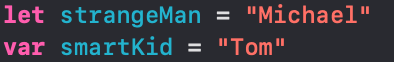By assigning a string to a constant, it can't be motified. By assigning a string to a variable, you're allowing the string to change.
If your string literal is multiple lines, then use triple quotation marks (""").

If the string will include double quotes, you'll need to use the backslash (\), known in Swift as the escape character because you are escaping the string
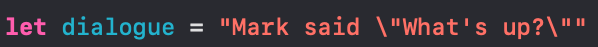You can use the escape character with other letters and symbols to produce specific results:
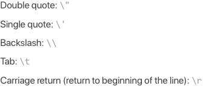Often, you would want to start with an empty string, and add to it over time. This requires it to be a variable since it is changeable. Use the following syntax to start the string without any text
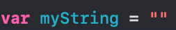If you need to make sure if a Swift string is empty, use the boolean property, isEmpty
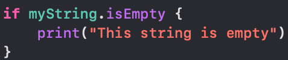Individual characters are of type Character. But since Strings are much more common in programming than individual characters, Swift will always infer the type of a collection of characters - or even a single character - as a String, unless you specify otherwise with a type annotation
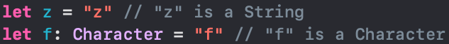Concatenation and Interpolation
You can combine strings using the "+" operator. You can use "+" to create a new String value from multiple String values. This is called concatenation.
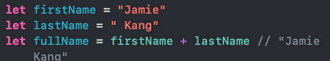If the existing String is a variable, you can use the += operator to add to it or modify it
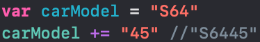Swift provides a syntax, known as string interpolation, that makes the inclusion of constants, variables, literals, and expressions easier. String interpolation allows you to easily combine many values into a single String constant or variable.
You can insert the raw value of a constant or variable into a String by preceding the name with a backslash \ and wrapping the name in parenthesis ().
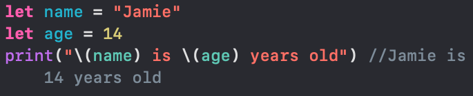String Equality and Comparison
Developers often need to compare String values to see if they're equal to each other
Just as you do for numbers, you can check for equality between two strings using the == operator. As you might expect, == checks for identical characters in the same order. Since uppercase characters aren't identical to lowercase characters, the strings have the same value if the case of each character also matches.
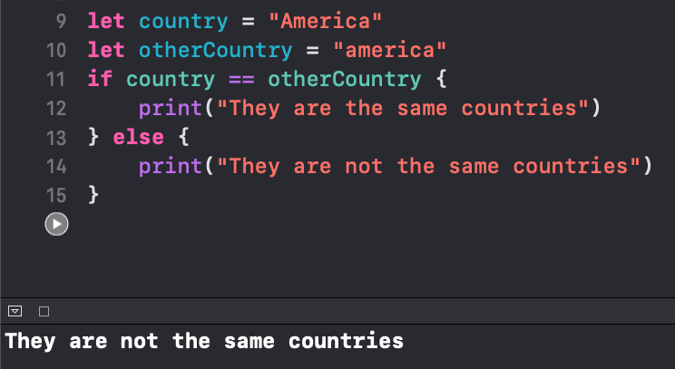If you want to ignore the capitalization of a string when checking for string equality, you can use the lowercased() method to normalize the two, comparing an all-lowercase version of the string with an all-lowercase version of the calling string
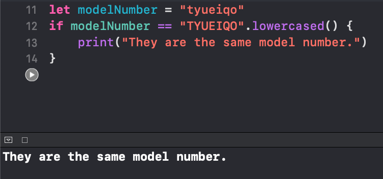If you want to match the beginning or the end of the string, you can use the hasPrefix(_:) or the hasSuffix(_:) method. Just like ==, these matches are case sensitive.
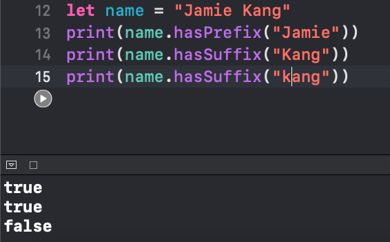Maybe you want to check if one String is somewhere within another String. You can use the contains(_:) method to return a Boolean value that indicates whether or not the substring was found.
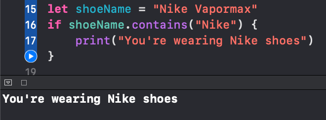Since a string is a collection of characters, its length is equal to the total number of characters. The size of any collection can be determined using its count property. You can use this property to compare strings or to evaluate whether strings meet a certain requirement.
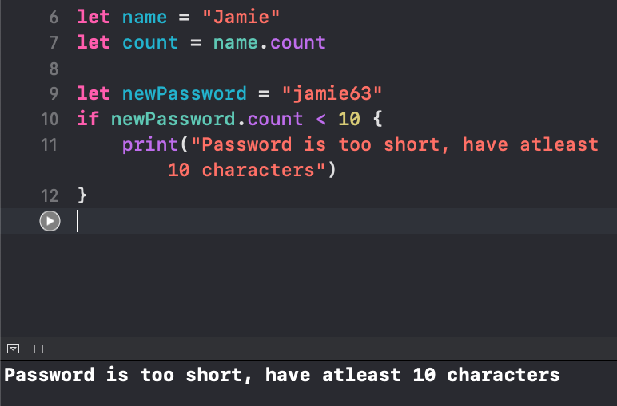More Advanced String Topics
Few Useful String Properties and Methods
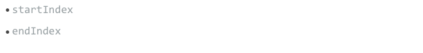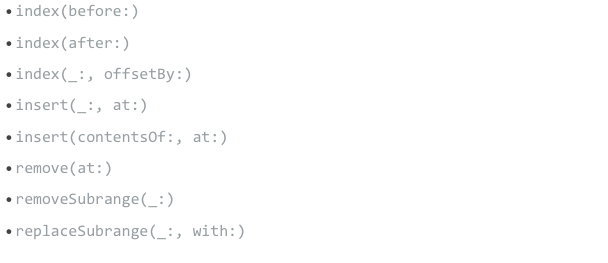
Unicode
Every Swift String adheres to an international computing standard called Unicode. Unicode compliance allows Swift to go beyond the short list of letters and symbols in the English language. Instead, Unicode encompasses over 128,000 different characters used across multiple languages. This includes accents on characters (é), emoji (🐮), symbols (∞), Kanji (七), and other specialized characters. Unicode ensures that the length of these characters are rational, so that "e," "é," and "🐮" each have a correct length of 1. In addition, Unicode supports text that reads right to left, as well as left to right.
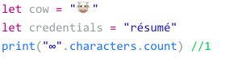